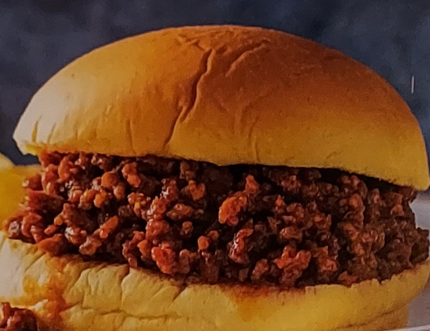

Sloppy Joes

Some tasty and fancy sloppy Joes
This is a fancy recipe for elevated sloppy Joes. An American classic. Everyone loves sloppy joes!
This is a recipe you should use when you want some meaty sammiches.
Ingredients
- 1 Pound of Ground Chuck (80% lean)
- Some tomato paste
- Some brown sugar
- Catchup (ketchup)
- Red wine vinegar
- Worchester Sauce
- Corn Startch
- Baking Soda
- paprika
- a nice big yellow onion
- some garlic cloves
- Pickle rounds
- hamburger buns
Steps
- First throw half onion in a large non-stick skillet, with some baking soda and a bit of vegeble oil
- Cook the onions til smelling good, somewhat transparent
- Thrown in the garlic
- Throw in all them spices
- Then all the rest of the stuff (hold the beef)
- The finally throw in that beef and start mixin and cookin
- Add a whole bunch of spices
- Boil the pasta separately and dump that in the pan
- Mix it all up
- Eat the tasty meal